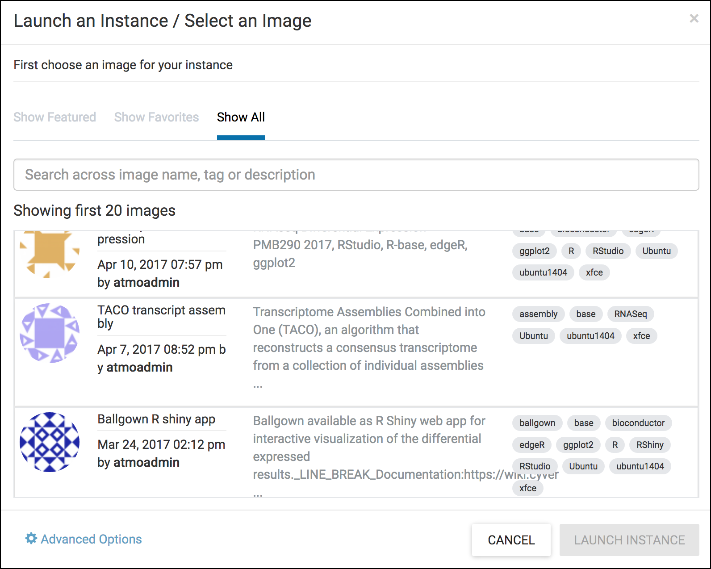
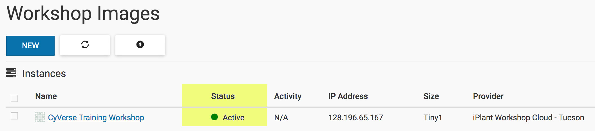

Creating a Project and Launching an Instance¶
Atmosphere makes it easy to launch an instance (virtual machine), but your work is more than just a computer - it is data and software. To that end, Atmosphere helps you organize your work into a project. A project contains one or more instances, and may contain several (or no) volumes (datasets) or images ("saved" instances).
Definitions: Image and Instance
-
Instance: an instance is a running virtual machine.
You request from Atmosphere a CPUs, disk space, and memory, and you are temporarily allocated these physical resources to "build" your virtual computer (virtual machine). -
Image: an image is a file that contains an operating system, and any other data that was saved at the time of imaging (creating the image file).
If we saved everything on your computer to an image file, we could clone your computer onto a new device and you would not have to reinstall any software. Your files, system preferences, etc. would all be saved. -
Volume: a volume is a "virtual disk" that you can attach and detach to your instance, like a thumb drive.
Normally, when you start an instance, you need to transfer data onto it. While the data transfer may be quick, it usually takes time. A volume is nearly instantaneous. Although it is virtual you can keep a volume persistently in Atmosphere, and attach and detach as needed to any instance.
Note
For our purpose, the terms "instance" and "virtual machine" are used interchangeably in this guide.
Creating a Project¶
- If necessary, login to Atmosphere.
- Click on the 'Projects' menu at the top of the page; the click on the 'CREATE NEW PROJECT' button; give your project a name and description and click 'CREATE'.
From the 'Projects' page, you will see a listing of existing projects and the number of instance, images, volumes, and links associated with these projects.
Atmosphere Image(s):
| Image name | Version | Description | Link |
|---|---|---|---|
| CyVerse Training Workshop | 1.0 | This image contains some basic functionalities for use in CyVerse training workshops (RStudio/Rstudio Server, Jupyter Notebook/Server, Sleuth, Kallisto RNA-Seq tools) |
Image |
Launching an Instance¶
-
If necessary, login to Atmosphere.
-
On the page Projects click on an existing project to launch the instance as part of that project. If necessary, create a new project using the directions above.
-
From your project's individual page, click on the NEW button and select 'Instance'.
-
Search through the available instances in the 'Launch an Instance/Select an Image' window.

Tip
You can search the image catalogue at any time from the Image Search page. Click on the 'Images' link at the top of the Atmosphere page. Most images have tags to help you identify the installed software. You can also click on an image listing to get additional details and descriptions. Since Most images are community-developed, the documentation is only as good as what is provided by the image owner.
-
Search the catalog for the CyVerse Training Workshop image.
-
To launch an instance now, click 'LAUNCH INSTANCE'. Alternatively, you can name your image, or adjust other settings including the project, and instances size before clicking the launch button.
Note
If you are trying Atmosphere for the first time, we recommend using the default 'tiny1' instance size. Also note, that the largest instance sizes are limited and may not be available at any given time based on demand.
Once your instance is launched, your project page will display the status of all instances. Instances are typically available within 10-15 minutes.
Important
You can only connect to an instance when the status displayed is 'Active'. 
Fix or improve this documentation
- Search for an answer: CyVerse Learning Center
- Ask us for help: click on the lower right-hand side of the page
- Report an issue or submit a change: GitHub Repo Link
- Send feedback: learning@CyVerse.org